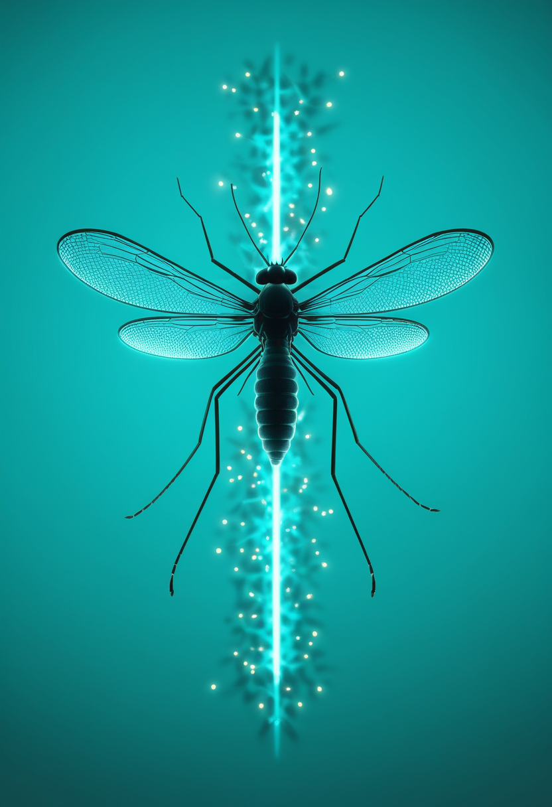

金曜日の便り。コンゴ民主共和国(DRC)保健当局は8月11日、ブンディブギョ株によるエボラ出血熱の死者が2000人を超えたと発表した。5月の流行宣言以来、記録上最も速いペースで拡大する史上2番目の規模の流行となる一方、WHOとDRC政府は既存の承認済みワクチンを用いた大規模治験の開始に向けた協議を進めている。命の章では、SMA治療薬apitegromabが第3相試験で運動機能改善を確認しFDA審査が9月30日に迫るなか、イングランド政府が新生児スクリーニングの全国展開を10月から先行開始すると発表した。自由の章では、SynchronがALS患者によるiPadのApple BCIプロトコルへの世界初のネイティブ連携を実現し、Neuralinkは思考だけで電動車椅子を操作する治験を進めている。基盤の章では、エボラに加えCDCが免疫抑制療法とアルボウイルス脳炎の重症化リスクを警告し、人食いバクテリアの感染がルイジアナ・フロリダ両州で7人の死者を出した。畏敬の章では、JWSTが宇宙誕生からわずか6億年後の「ブラックホール星」を発見し、1999年以来となる皆既日食が欧州本土を横断、量子コンピュータが核融合エネルギーの燃料材料を世界初計算した。そして美の章では、6万年前のダチョウ卵殻の幾何学模様、北シナイの巡礼宿駅跡、ボルセーナ湖底の3000年前の小麦が、書くことを知る以前の人類の営みを静かに物語る ― 危機の速報と、それに立ち向かう治験・政策・技術という「前進」が同時に進む一日となった。
コンゴ民主共和国(DRC)保健当局は8月11日、ブンディブギョ株によるエボラ出血熱の死者が2000人を超えたと発表した。確定症例4381例のうち死者2011人で、直近20日間だけで死者数が1000人から2000人へと倍増しており、5月15日の流行宣言・WHOの緊急事態宣言(PHEIC)以来、記録上最も速いペースで拡大する史上2番目の規模の流行となっている。一方でWHOとDRC政府は、ブンディブギョ株に対する交差防御効果を確認するため、既存の承認済みエボラワクチン(Ervebo)を用いた大規模な第3相臨床治験の開始に向けた協議を進めており、DRC政府はブンディブギョ株向けの緊急備蓄要請も提出した。国際社会からは既に4億5000万ドル超の支援が集まり、信頼される地域保健従事者を窓口とする「村単位」の対応も展開されている。
SMA啓発月間にあわせ米MDA臨床科学会議(2026年)で発表されたデータによると、筋強化療法apitegromab(Scholar Rock社)の第3相SAPPHIRE試験(2〜21歳、非歩行型SMA患者対象、既存のSMN標的療法と併用)で主要評価項目を達成し、運動機能スコア(HFMSE)の変化量は全体平均で1.8ポイントの統計的有意な改善を示した。効果は治療開始が早いほど大きく現れたという。米FDAは同薬の生物製剤承認申請(BLA)を受理しており、審査結果(PDUFA)の判断期日は9月30日に設定されている。
英政府は7月16日、脊髄性筋萎縮症(SMA)の新生児スクリーニングをイングランド全域の「ヒールプリック検査」に追加すると正式発表した。既に検査体制が整う7つの検査施設で10月から先行開始し(新生児の約72%をカバー)、残る施設も2027年10月までに対応を完了させ、最終的に全ての新生児が対象となる予定。15万人超の署名を集めたオンライン請願を契機とした議会での議論を経て、政府は当初計画を前倒しした。
新薬の効果検証データが積み上がる一方、政策の現場では「生まれてすぐの診断」をどう全土に行き渡らせるかが焦点になっている ― ウェールズが求めた地域格差是正の答えの一つが、イングランドの10月からの先行開始という形で示されつつある。
BCI企業Synchronは8月、ALS(筋萎縮性側索硬化症)患者でCOMMAND臨床試験の参加者である男性が、同社の血管内留置型BCI「Stentrode」を用いてiPadのホーム画面操作・アプリ起動・文章入力を、手を動かさず声も出さず視線も使わずに念じるだけで行えたと発表した。AppleのBCIプロトコルにネイティブ対応した初の事例とされる。Stentrodeは頸静脈から血管を通して脳の運動野付近にステント状の電極を留置する方式で、開頭手術を必要としない。本人は「両手の自由を失った時、独立性まで失ったと思っていた。今はiPadで大切な人にメッセージを送り、ニュースを読み、世界とつながっていられる」と語っている。
Neuralinkは7月の更新で、脳インプラント「N1」の治験参加者が、運動野の神経活動を解読してカーソルを動かす技術を応用し、電動車椅子の前進・後退・旋回・座席調整までを思考のみで操作する試験を進めていることを明らかにした。参加者は車椅子搭載カメラの映像を見ながら実環境でのナビゲーションを試しているという。同社の更新によれば6月22日時点でN1の埋込を受けた参加者は世界で26人に達しており、四肢麻痺や重度ALSを対象としたPRIME試験の枠組みで安全性と実用性の検証が続けられている。デジタルへのアクセスから、身体的な移動の自律性へ ― BCIが踏み込む領域が広がりつつある。
アプリ操作から車椅子の移動まで、BCIが担う「自由」の範囲がこの一月で確実に広がった ― 思考をデジタルに変換する技術は、次に身体そのものの移動を取り戻す段階に入りつつある。
DRC保健当局は8月11日、ブンディブギョ株によるエボラ出血熱の死者が2000人を超えたと発表した。確定症例4381例中2011人が死亡し、5月の流行宣言以来、記録上最も速いペースで拡大する史上2番目の規模の流行となっている。WHOとDRC政府は、交差防御効果を確認するため既存の承認済みワクチン(Ervebo)を用いた大規模な第3相治験の開始協議を進めており、DRC政府はブンディブギョ株向けの緊急備蓄要請も提出。国際社会からは4億5000万ドル超の支援が集まり、地域保健従事者を窓口とする「村単位」の対応が展開されている。

米CDCは8月11日、Health Alert Network(HAN)を通じ、リツキシマブやオクレリズマブなどB細胞を減少・抑制させる抗CD20モノクローナル抗体薬を使用している患者について、ウエストナイルウイルスをはじめとするアルボウイルス感染による神経浸潤性疾患の重症化リスクが高いと注意喚起した。既報の症例分析では致死率が約40%に達し、生存者の多くも長期的な神経学的後遺症を抱えるという。CDCは患者・医療従事者に対し、蚊やマダニに刺されないための対策を呼びかけている。
米メディア各社の報道によると、暖かい沿岸海水に生息する人食いバクテリア(ビブリオ・バルニフィカス)による感染で、2026年に入りルイジアナ州で5人、フロリダ州で2人の計7人が死亡した。ルイジアナ州保健局は8月6日、症例数が過去10年平均(年7件)を上回る9件に達し、死者数も例年平均の5倍に上ったとして正式な注意喚起を発表。確認された症例はいずれも、開放創のある状態で海水に入った後に感染しており、全員が基礎疾患を有していたという。
史上最速で拡大する致死的な感染症、免疫抑制療法に潜むリスク、身近な海水に潜む人食いバクテリア ― 規模もリスクの形も異なる三つの警告が同じ週に重なった。ワクチン治験という「前進」の芽もまた、同じ週に動き出している。
米ハワイ大学天文学研究所のロハン・ナイドゥ氏らの国際チームは8月12日、Nature誌に、ジェームズウェッブ宇宙望遠鏡(JWST)の観測データから「ブラックホール星」と呼ばれる新種の天体「MoM-BH*-1」を発見したと発表した。その光はビッグバンからわずか約6億6000万年後に発せられたもので、太陽質量の約10万倍のブラックホールが、太陽系ほどの大きさの高密度な水素ガス雲に包まれている状態と分析されている。通常の恒星ではあり得ない強さのバルマー break(7.7)が観測され、近年JWSTが多数発見してきた「小さな赤い点(リトル・レッド・ドッツ)」の正体を解く手がかりになる可能性があるという。
8月12日、欧州本土では1999年以来となる皆既日食が、グリーンランド東部・アイスランド西部を経てスペイン北部からポルトガル北東端にかけて観測された。スペインではラ・コルーニャからパルマまで、オビエド・レオン・ビルバオ・サラゴサ・バレンシアなど主要都市を横断する形で日没間際の午後8時27分〜35分(現地時間)に太陽が欠け、皆既の継続時間は最大2分18秒に達した。スペインで次に皆既日食が見られるのは2053年になるという。
IBM、米オークリッジ国立研究所(ORNL)、クリーブランドクリニックの共同チームは7月6日、核融合発電の燃料となる三重水素(トリチウム)の増殖材料の有力候補「FLiBe」について、量子コンピュータによる分子配置計算を世界で初めて実施したと発表した。古典コンピュータでは工学的に必要な精度での計算が困難だったこの問題に対し、増殖材料内でトリチウムが腐食性のフッ化トリチウムとして留まるか気体として漏れ出すかという、燃料増殖ブランケットの実用性を左右する分岐点に初めて工学レベルの精度で答えを出した。核融合炉1基の稼働には1日あたり約1ポンドのトリチウムが必要とされる一方、地球全体の年間生産量は限られており、この計算は増殖効率の最適化に向けた基礎的な一歩となる。
宇宙誕生から6億年後の巨大ブラックホールの謎、1999年以来の皆既日食、そして地上の核融合エネルギーを支える量子計算 ― スケールの異なる「見えないものを見る」試みが並んだ一日。
PLOS One誌に発表された研究(Decembrini・Ottaviano・Cartolano・Spinapolice・Ferrara、2026年)によれば、南アフリカのハウィーソンズ・プールト文化層から出土した6万年前のダチョウ卵殻断片112点を幾何学的・空間的に分析したところ、9割超が予測可能な幾何学的組織モデルに合致することが判明した。格子・ハッチング帯・菱形模様は共同体内で一貫した内的論理を共有しており、交点間の距離が安定して制御されていたことから、単なる手先の器用さではなく、文字や農耕が登場するはるか以前から、中期石器時代後期の人類集団が明確な幾何学的原理に基づいて視覚的な形を構成する認知的な見通しを持っていたことを示しているという。
エジプト観光考古省は8月、北シナイの「失われた都市アシラ」で、イスラム期エジプトの重要な陸路「エジプト巡礼者の道(ダルブ・アルハッジ・アルマスリ)」沿いにあったキャラバンサライ(隊商宿)の遺構を発見したと発表した。ナイル渓谷とアラビア半島・レバントを結んだこの道沿いで、商人・巡礼者・兵士・郵便配達人が身を寄せ、取引し、補給を受けた要塞化された宿泊施設の基礎部分が確認され、貯水・貯食容器やランプの破片から、1285〜1341年に在位したマムルーク朝スルタン、アル=ナースィル・ムハンマド・イブン・カラーウーンの治世頃のものと推定されている。
イタリア文化省の水中考古局が実施した2026年度の調査で、ボルセーナ湖(ヴィテルボ県)の湖底に眠る青銅器時代後期〜鉄器時代初期(紀元前15〜9世紀頃)の集落遺跡「グラン・カルロ」から、良好な保存状態のスペルト小麦の穂と土器に収められたエンマー小麦の粒、正体不明の木造構造物が新たに発見された。同遺跡では2026年、60年に及ぶ調査史上初めて鉄器時代の織物断片も出土しており、住居域「杭上家屋」と祭祀域「アイオラ」から成るこの集落は、焼失・崩壊・再建を繰り返しながら人が住み続けてきたことが分かっている。
文字を持たない時代の幾何学的思考、巡礼者たちが行き交った隊商宿、そして湖底に沈んだ集落が守り続けた3000年前の小麦の粒 ― 人類が何を考え、どう行き来し、何を食べてきたかという記憶が、今週も静かに地中と水底から浮かび上がった。
2026年8月11日、コンゴ民主共和国のエボラ出血熱による死者は2000人を超え、史上最速のペースで拡大する記録上2番目の規模の流行となった。同時にWHOとDRC政府は、既存の承認済みワクチンを用いた大規模治験の開始に向けた協議を進めており、4億5000万ドル超の国際支援と村単位の対応が展開されている。命の章では、apitegromabの第3相試験データとFDA審査(9月30日)、イングランドの新生児スクリーニング全国展開(10月開始)が明らかになった。自由の章では、SynchronのALS患者によるiPad念じ操作とNeuralinkの電動車椅子操作治験が、BCIの担う「自由」の範囲を押し広げている。基盤の章では、CDCが免疫抑制療法とアルボウイルス脳炎のリスクを警告し、人食いバクテリアの感染がルイジアナ・フロリダ両州で7人の死者を出した。畏敬の章では、JWSTが宇宙最古級の「ブラックホール星」を発見し、1999年以来の皆既日食が欧州本土を彩り、量子コンピュータが核融合材料を世界初計算した。そして美の章では、6万年前のダチョウ卵殻の幾何学模様や北シナイの巡礼宿駅、ボルセーナ湖底の3000年前の小麦が、書字以前の人類の営みを物語った ― 危機の速さと、それに立ち向かう科学・政策・技術の歩みが同居する一日となった。
では、また明日の朝に。 — JaH